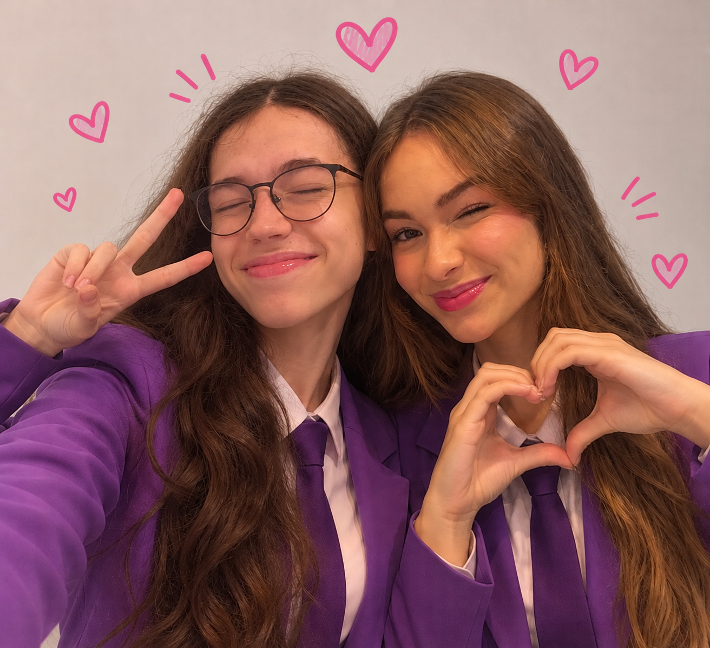

♡ Sobre Nós ♡

Conheça mais sobre os criadores
Felipe e Amanda, os maiores fãs da Olivia Rodrigo, são os criadores dessa página. Felipe já escutou o último álbum da cantora tantas vezes que Olívia está ficando preocupada com sua vida social, e Amanda já gritou tantas vezes no banho suas músicas que seus pais já se acostumaram. Brincadeiras à parte, essa duplinha de bem com a vida escuta Olívia Rodrigo pelo menos duas horas por dia, indo e voltando do transporte escolar. Eles estudam no IFC, Campus Sombrio, e aproveitam a viagem para se aprofundar ainda mais nas músicas da artista.
Agradecimentos
Muito obrigado por todos que visualizaram nossa página! Esperamos que tenham gostado e que ela tenha feito vocês se interessarem e conhecerem mais sobre a Olivia Rodrigo. Agradecemos também aos nossos professores, Jardel e Cleber, que nos ensinaram tudo o que precisávamos para fazer essa página, amamos vocês! E, claro, agradecemos a Olivia Rodrigo por nos inspirar todos os dias com suas músicas e por ser uma artista tão incrível, que consegue representar até mesmo os sentimentos indecifráveis que sentimos. Obrigado por tudo! Até a próxima, pessoal!
| Nome | Felipe | Amanda |
|---|---|---|
| Idade | 16 anos | 15 anos |
| Álbum favorito | You Seem Pretty Sad For a Girl So In Love | |
| Música favorita | Ballad of a homeschool girl | So american |
| Comida favorita | Lasanha | Sushi |
| Lugar que sonha visitar | Noruega | Japão |
| Aniversário | 13 de junho | 25 de fevereiro |